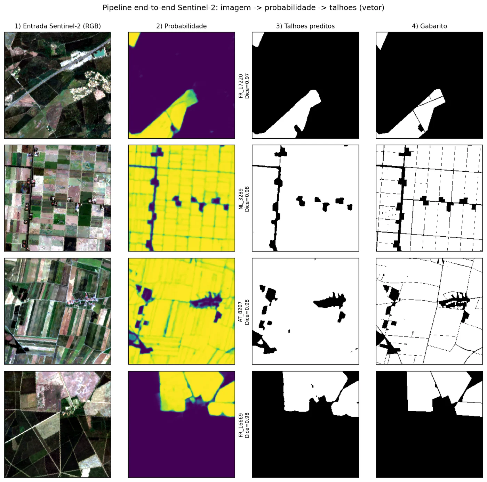
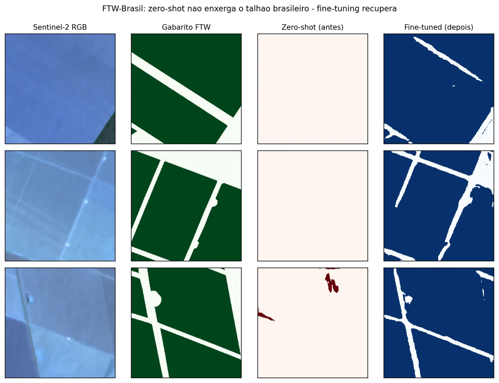
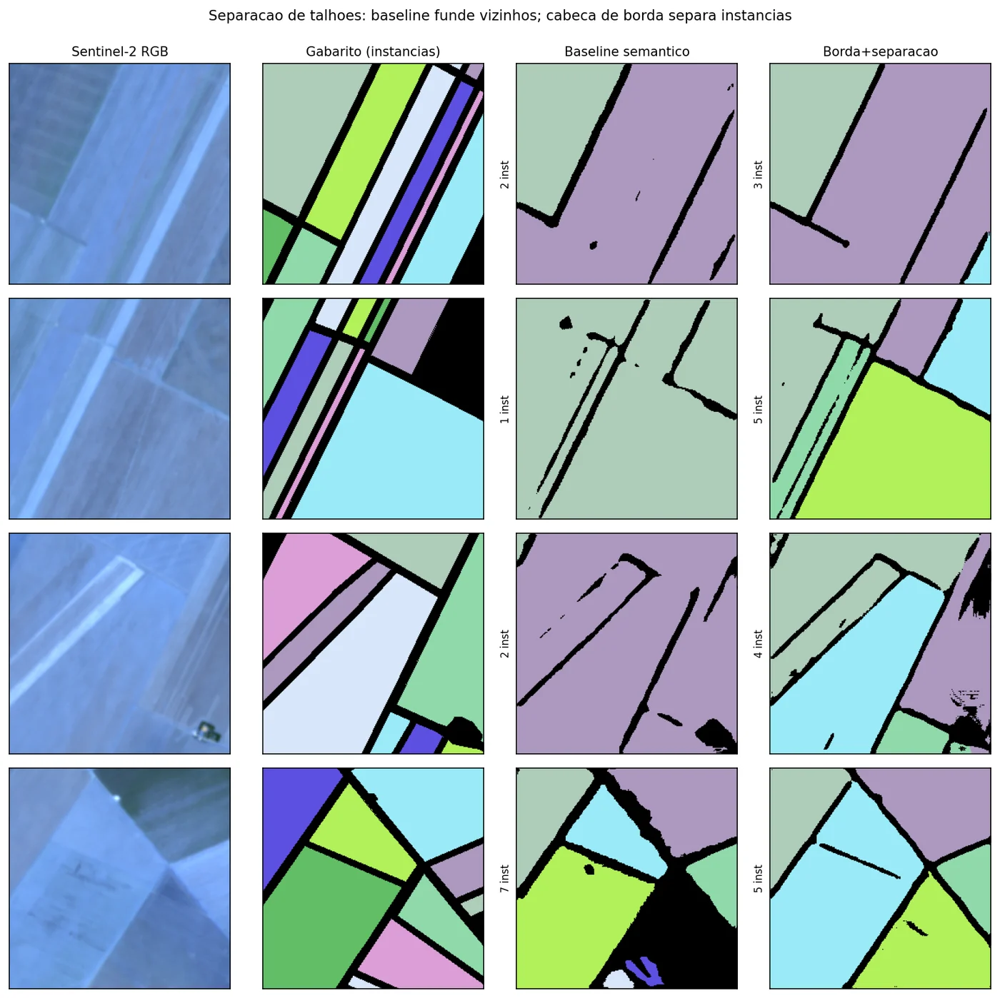
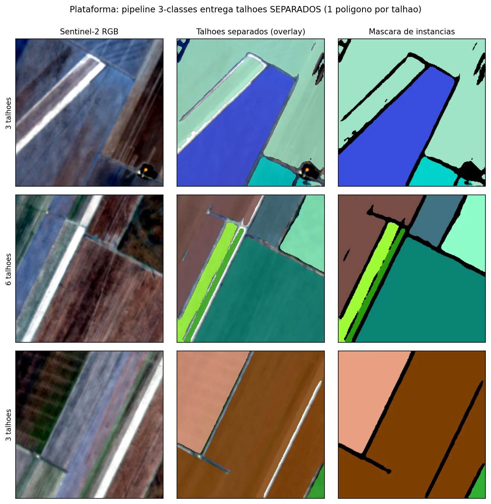

Multitemporal em vez de RGB
Testei segmentar uma única imagem RGB e desisti: cor e textura mudam demais de uma cena para outra. Com 6 datas, o modelo acompanha o ciclo da cultura.
TCC · IA Aplicada · PUCPR · 2026
Meu TCC: um pipeline de deep learning que encontra cada talhão em imagens Sentinel-2 de várias datas e entrega os polígonos numa plataforma web.
Título do trabalho: Segmentação Automática de Limites de Talhões Agrícolas com Redes Neurais Profundas e Imagens Sentinel-2 Multitemporais

O problema
Desenhar talhões à mão dá muito trabalho. Eu queria automatizar isso usando só imagem de satélite gratuita e um computador comum.
O talhão é a unidade básica da fazenda: é por ele que se planeja plantio, aplicação e colheita. No TCC, montei o caminho completo, da imagem do Sentinel-2 (10 m, gratuita) até polígonos com a área em hectares, e validei tudo num benchmark público para que qualquer pessoa possa reproduzir.
Como funciona
Seis datas do Sentinel-2 com as bandas B2, B3, B4, B8 e o NDVI, somando 30 canais. Assim o modelo vê a cultura mudando ao longo do tempo, e não só a cor de um dia.
U-Net, DeepLabV3+ e U-Net++ com encoders ResNet-34/50. As previsões são combinadas e reforçadas com TTA (flips).
Limiar e área mínima calibrados na validação. Depois a máscara vira polígonos com Rasterio e Shapely.
Um modelo de 3 classes (interior, borda e fundo) separa talhões vizinhos que a segmentação comum acabava juntando.
Um GeoJSON com um polígono e a área em hectares para cada talhão, servido por uma plataforma web com mapa.

Generalização
Na Europa o modelo foi muito bem. No Brasil, sem ajuste, ele quase não via os talhões.
O modelo foi treinado no AI4Boundaries, que é europeu. No benchmark Fields of The World (Brasil), o Dice caiu para cerca de 0,25. Fiz um fine-tuning com poucos dados locais e ele voltou para 0,72. A lição: reconhecer talhão depende muito da região e do sensor, e ajustar o modelo sai bem mais barato do que treinar outro do zero.
Dice médio, de 0 a 1

De pixel para talhão
Acertar os pixels não é a mesma coisa que encontrar os talhões.
O Dice mede área. Só que quem usa o sistema precisa de cada talhão como um polígono separado, e a segmentação comum juntava talhões vizinhos. Por isso treinei um modelo de 3 classes (interior, borda e fundo) e avaliei talhão por talhão, em 653 talhões de teste.
F1 de objeto (IoU ≥ 0,5), de 0 a 1
Panoptic Quality, de 0 a 1

Na plataforma
Depois virou produto: você desenha uma área no mapa e recebe os talhões.
O frontend, em React com Leaflet, recebe a área desenhada. O backend, em FastAPI, baixa as imagens Sentinel-2 L2A via STAC (sem precisar de login), roda o modelo de 3 classes com janela deslizante e TTA e devolve um polígono por talhão, com a área em hectares. Buscar as 6 datas e rodar o modelo leva de 30 a 60 segundos.

Decisões de engenharia
Testei segmentar uma única imagem RGB e desisti: cor e textura mudam demais de uma cena para outra. Com 6 datas, o modelo acompanha o ciclo da cultura.
A ordem das bandas e datas e a normalização por percentil (2 a 98) são iguais no treino e na inferência. Descobri que uma ordem errada zerava a previsão, então corrigi e deixei o código conferindo isso.
Usei a divisão oficial do FTW. Calibrei só na validação e calculei as métricas finais em 188 tiles de teste que o modelo nunca viu.
Treinei numa GTX 1650, em fp32 (com fp16 dava NaN) e com batch pequeno. Deu trabalho, mas funcionou.
Limitações e próximos passos
Talhões muito pequenos (menos de 5% do tile) ainda são o ponto fraco, com Dice entre 0,18 e 0,49. Os grandes e médios ficam entre 0,70 e 0,93. Como próximos passos, quero mais exemplos de talhões pequenos, imagens com resolução maior e uma comparação com modelos fundacionais como o SAM.